Riichi Mahjong
A Brief Introduction
About Us

Mahjong 麻雀
- How many players?

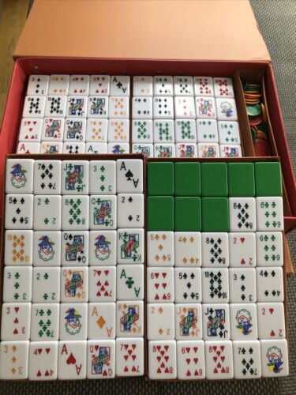
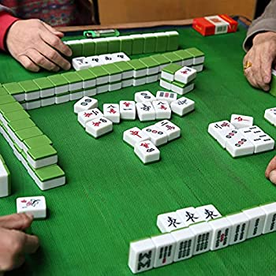
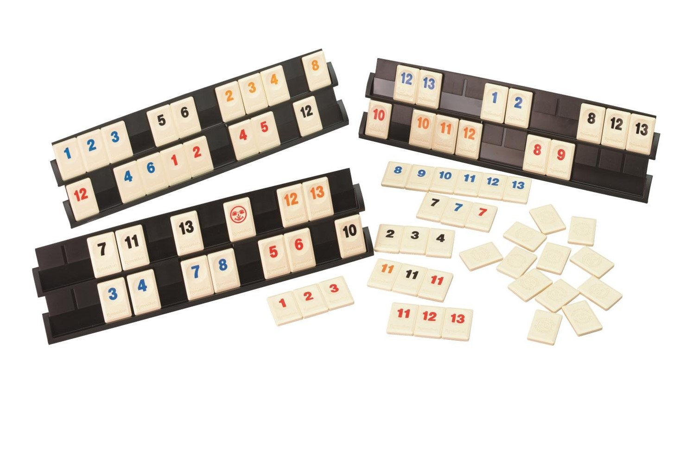
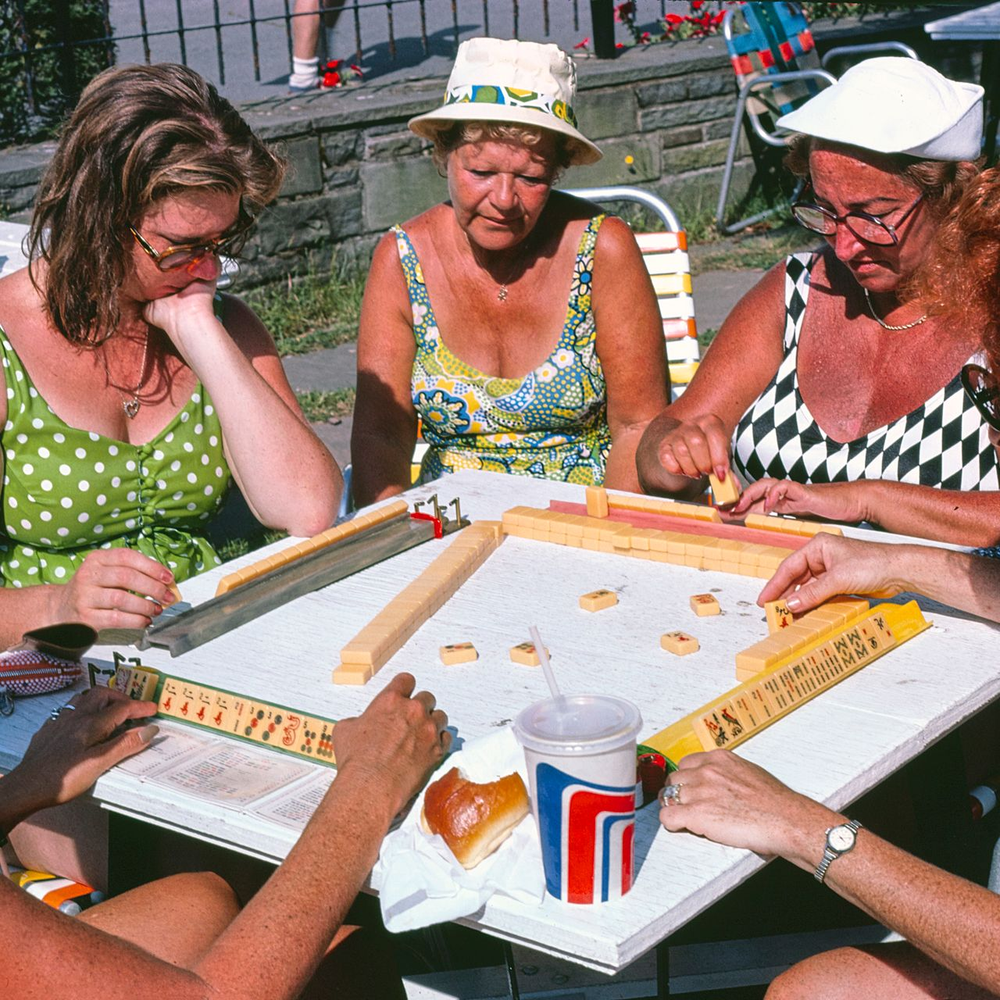
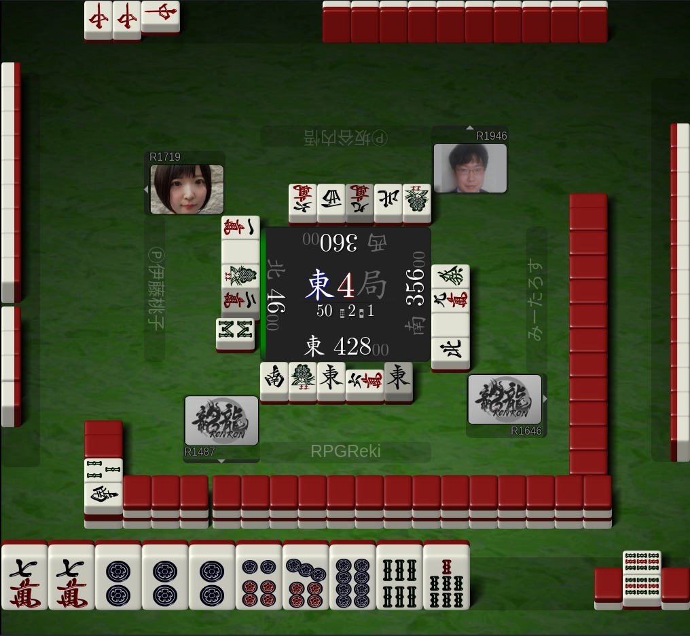
Basics: Suits and Shapes
{% for i in (1..9) %} {% endfor %}
{% endfor %}
{% for i in (1..9) %} {% endfor %}
{% endfor %}
{% for i in (1..9) %} {% endfor %}
{% endfor %}
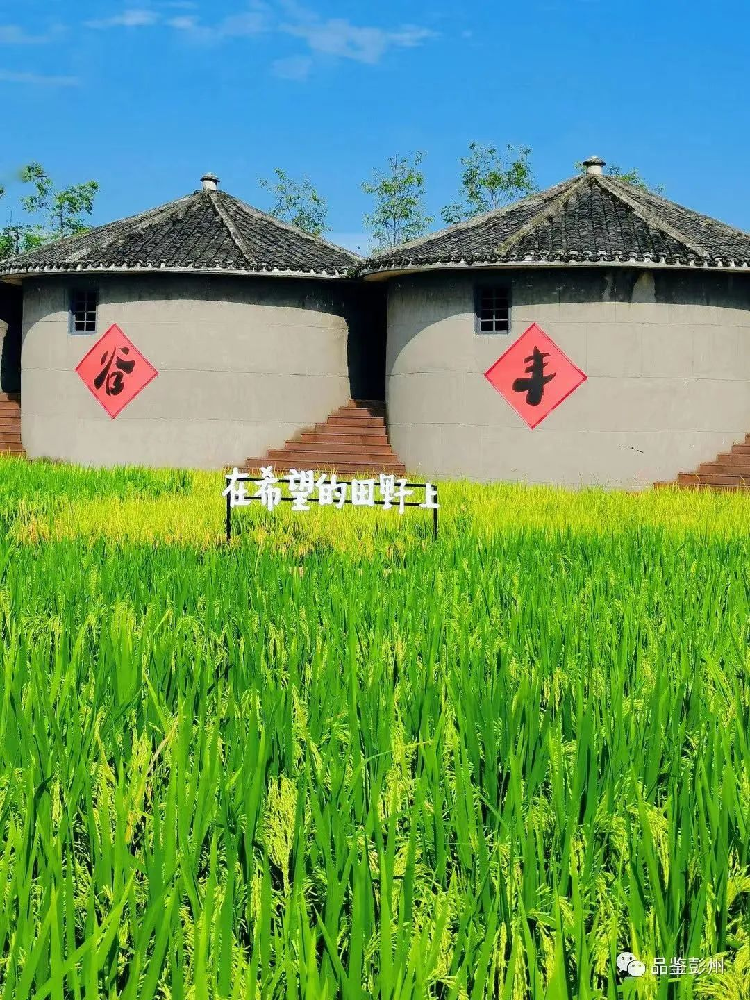
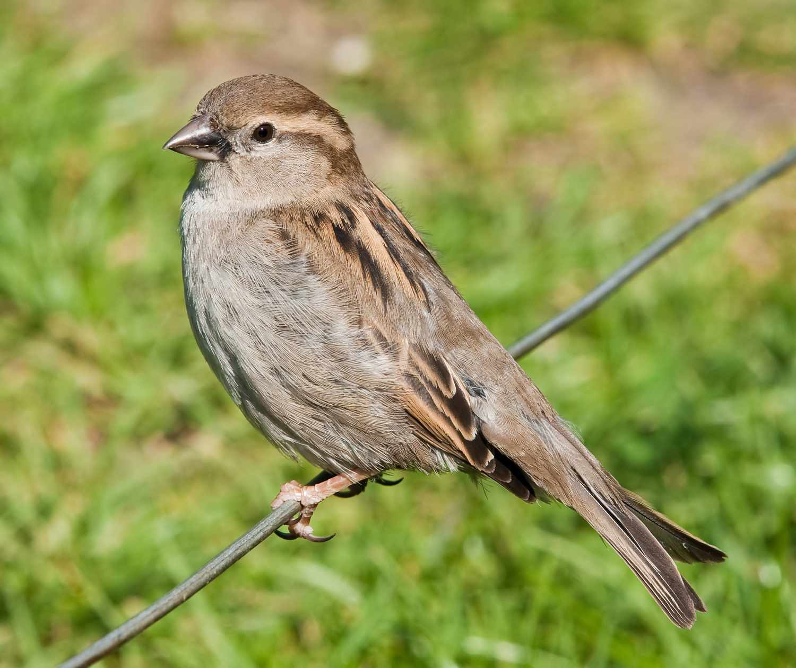
{% for i in (1..9) %} {% endfor %}
{% for i in (1..9) %} {% endfor %}
{% for i in (1..9) %} {% endfor %}


{% for i in (2..4) %} {% endfor %}
Goal
{% for i in (2..4) %} {% endfor %}
{% for i in (3..5) %} {% endfor %}
{% for i in (4..6) %} {% endfor %}
mentsu mentsu mentsu mentsu jantou
koutsu shuntsu shuntsu shuntsu toitsu
{% for i in (2..4) %} {% endfor %}
{% for i in (3..5) %} {% endfor %}
{% for i in (4..6) %} {% endfor %}
{% for i in (5..7) %} {% endfor %}

Starting the Game
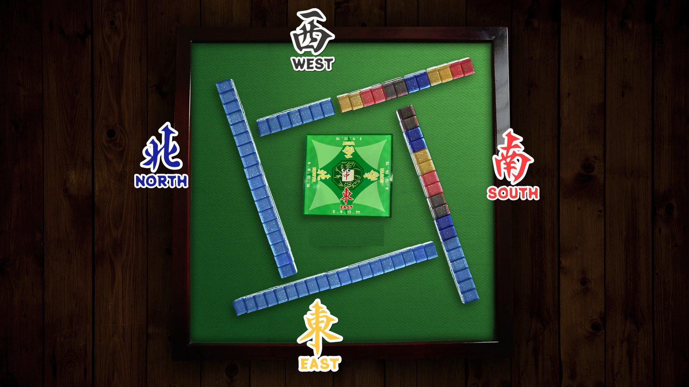
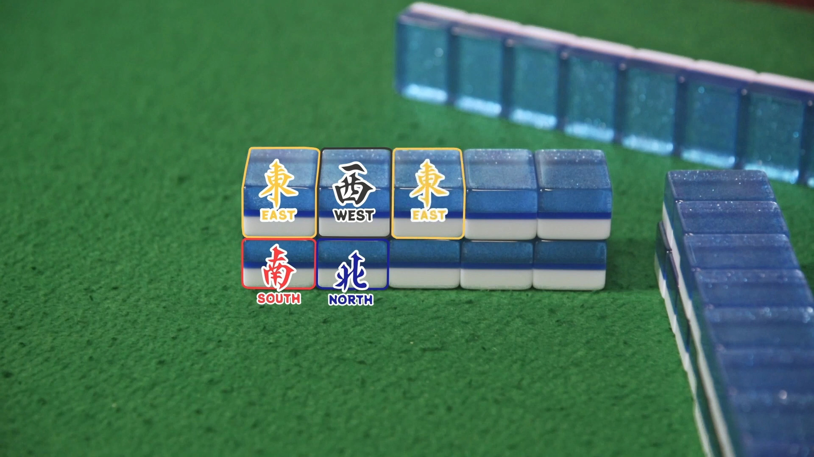
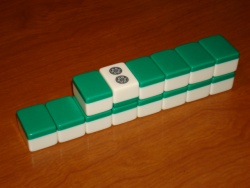
Riichi Mahjong
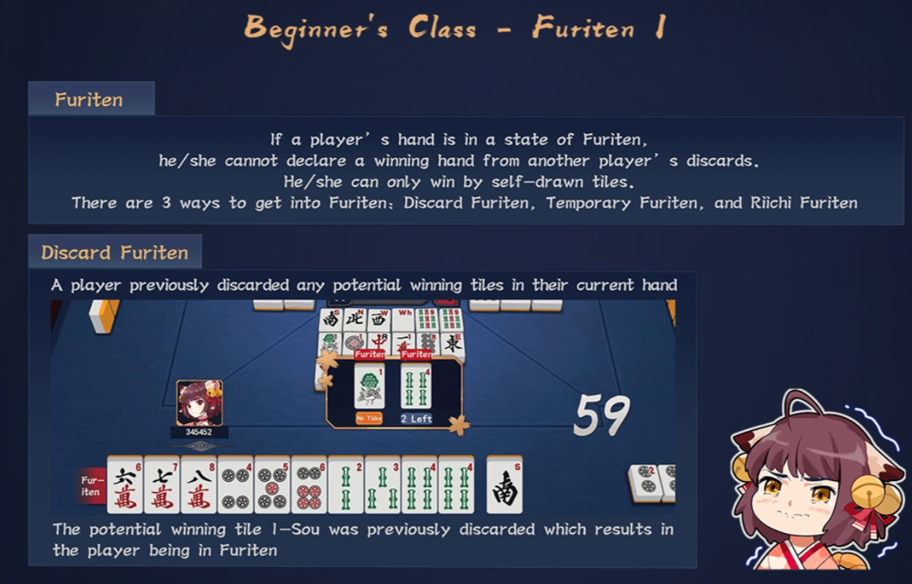
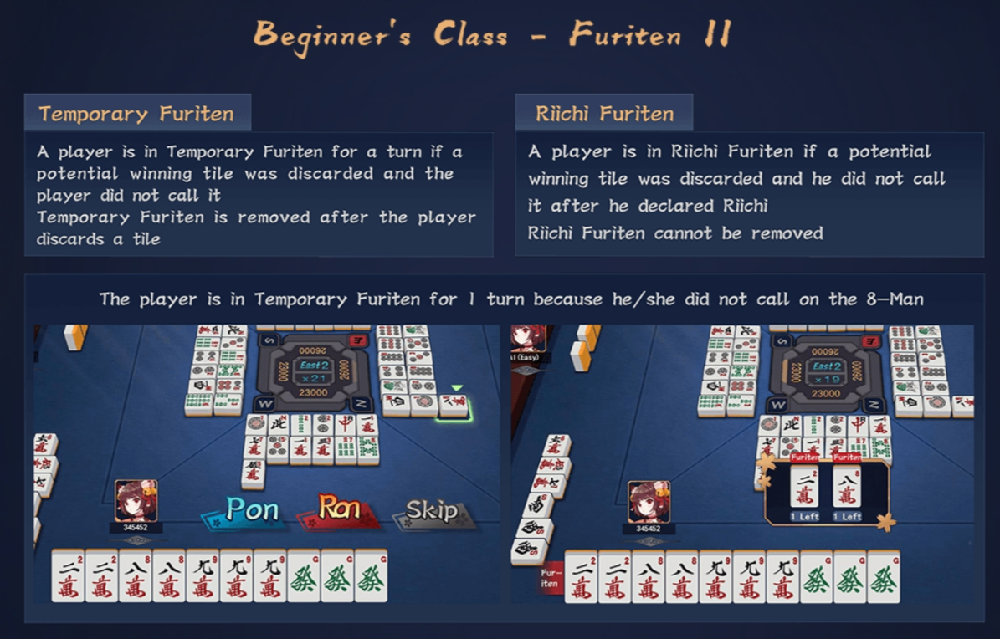
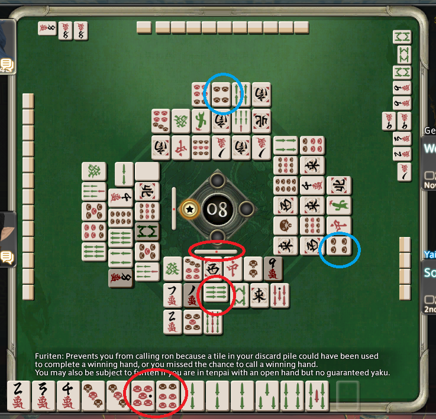
Yaku
Riichi
Menzen Tsumo
Tanyao
Pinfu
Iipeikou
Sanshoku Doujun
Sanshoku Doukou
Toitoi
Online Platforms
Tenhou: https://tenhou.net , Translation Browser Extension: https://mahjong.ie/tenhou/
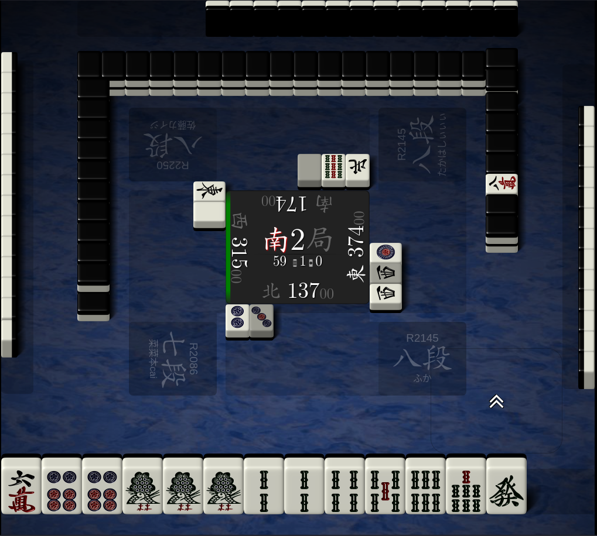
Ron Ron: https://ron2.jp , Translation Browser Extension: https://mahjong.ie/tenhou/
MahjongSoul: https://mahjongsoul.yo-star.com
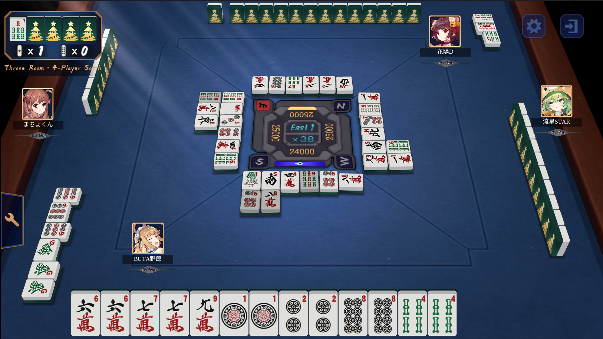
Riichi City: https://www.mahjong-jp.com
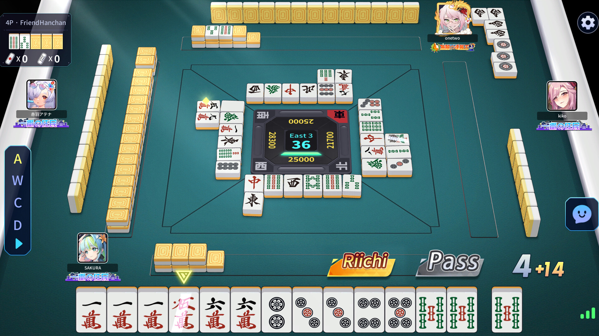
Mahjong Time: https://www.mahjongtime.com
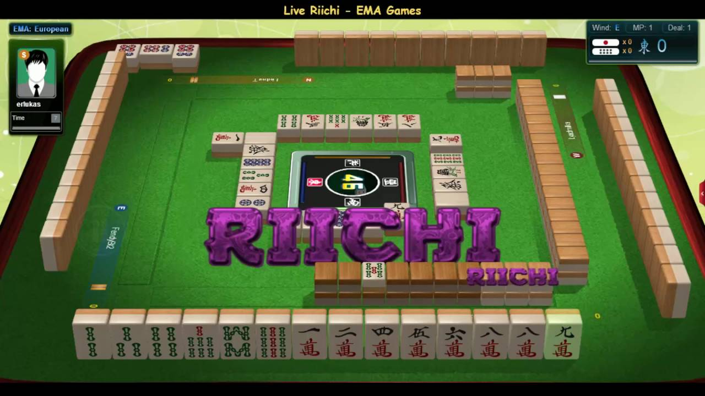
SEGA NET MJ: http://sega-mj.com
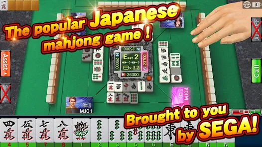